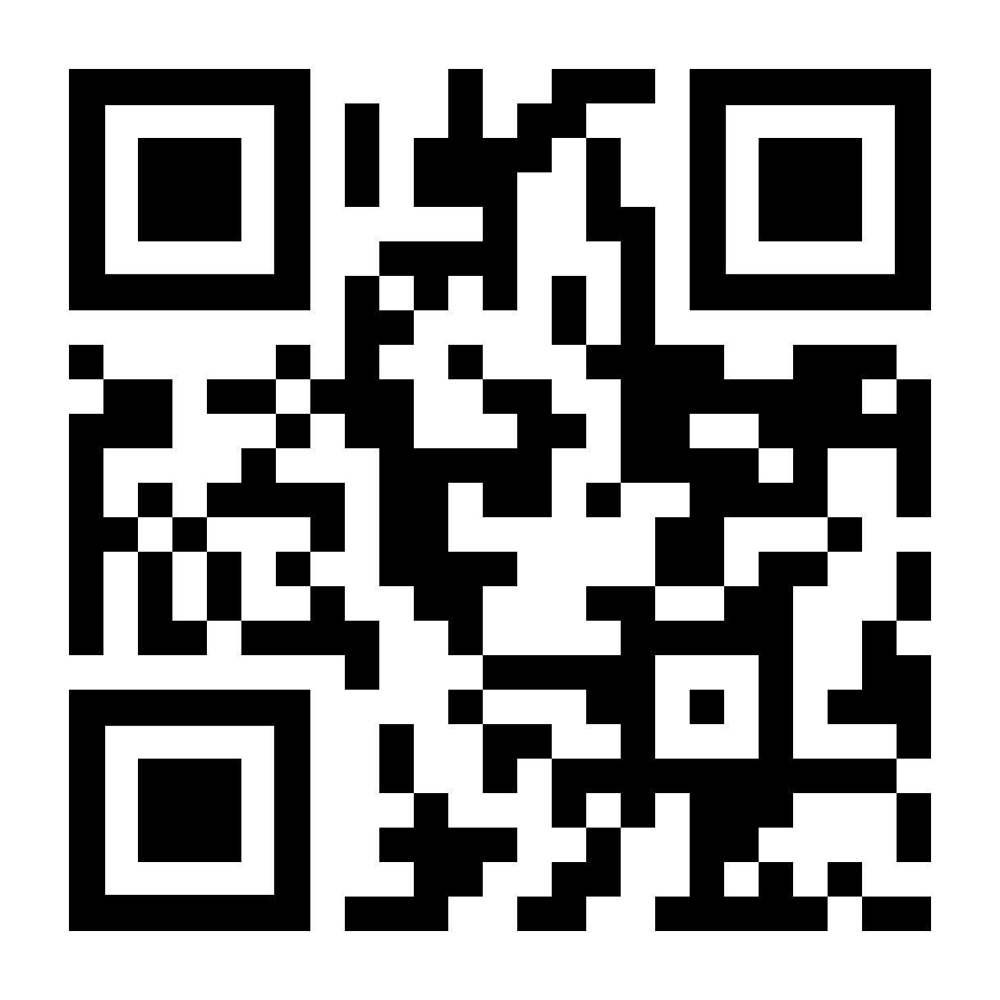
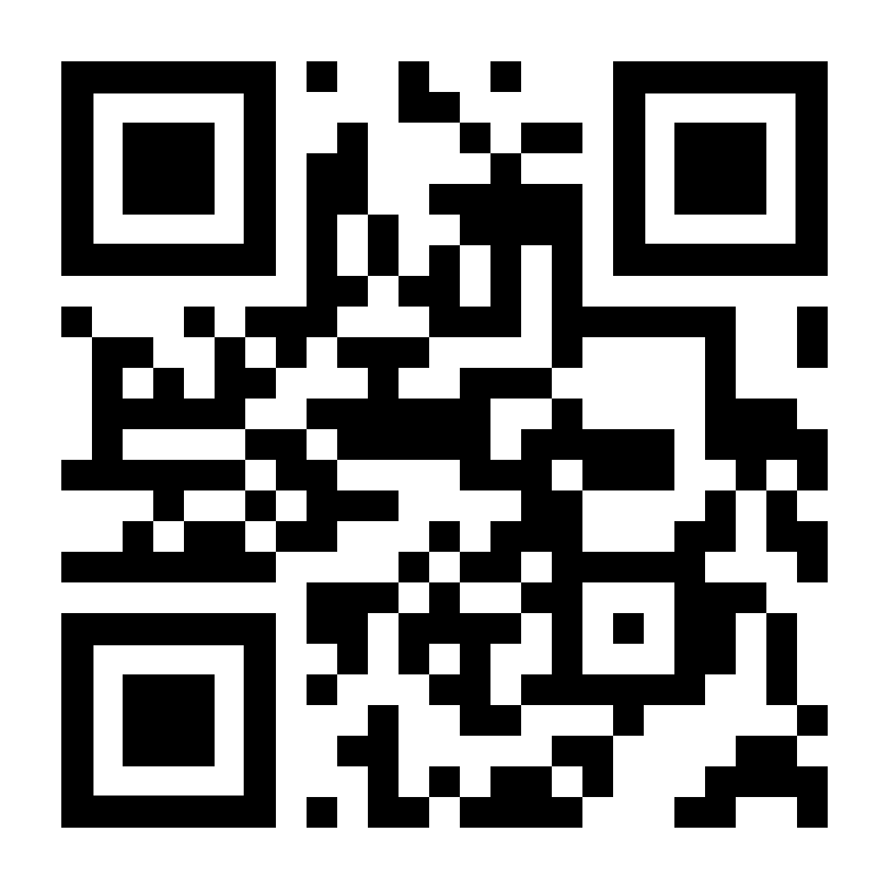
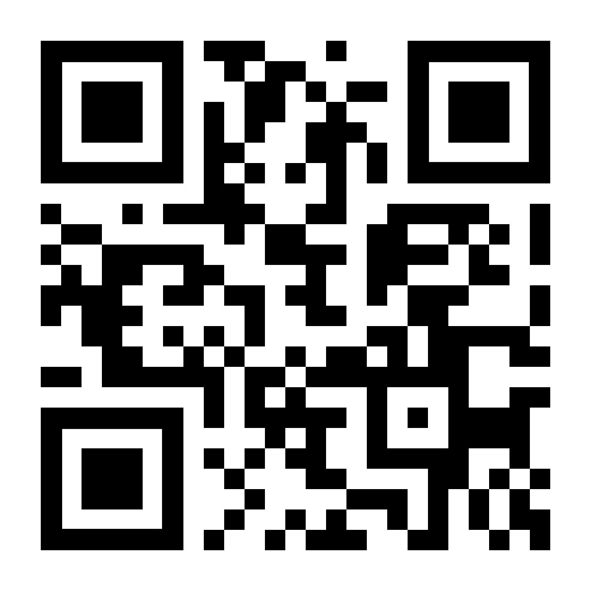
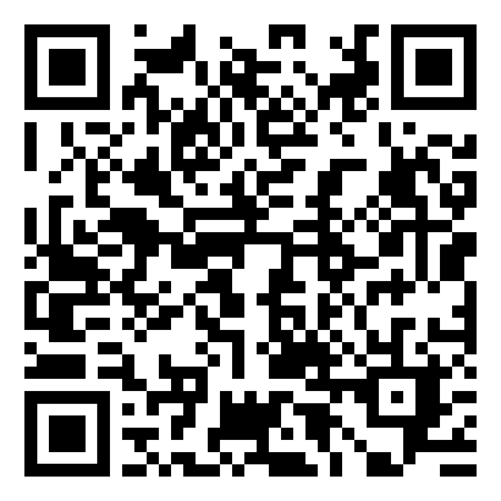

SkarbIQ
Review guide
SkarbIQ reads Belarusian fiscal receipts by their QR code and sorts every purchased item into spending categories. The app UI is in Russian. No account is needed in the app.
Below are real receipt QR codes you can scan from this screen with the app.
How to test
- Open SkarbIQ and tap Сканировать чек (Scan receipt).
- Point the iPhone camera at one of the QR codes below.
- For codes 1–3 the app asks for the purchase date. Tap the matching day or type it as DD.MM (the date is shown under each code), then tap Найти чек (Find receipt).
- The receipt preview shows every item with its category. Tap Сохранить (Save).
- Open the Аналитика (Analytics) tab to see spending by category.
Receipts to scan
Receipt 1 · fiscal

Purchase date
DD.MM.YYYY
Standard Belarusian fiscal receipt
Receipt 2 · fiscal

Purchase date
DD.MM.YYYY
Standard Belarusian fiscal receipt
Receipt 3 · fiscal

Purchase date
DD.MM.YYYY
Standard Belarusian fiscal receipt
Receipt 4 · cloud register

Purchase date
not needed
Loads directly, no date
Receipt from an iKassa cloud cash register
Receipts 1–3 are loaded from the public receipt verification site ch.info-center.by, which belongs to a third party. That site may show a captcha. After several checks it may ask to sign in — this is the site's own limit, not part of SkarbIQ. If that happens, please use receipt 4 or the manual entry below.
Without a receipt or network
Tap Добавить расход (Add expense) → Добавить вручную (Add manually), enter an amount and a category, and save. This works fully offline.
Good to know
• Electronic receipts from some Belarusian retail chains are served only to Belarusian IP addresses, so they are not included here.
• Settings → Улучшение категорий (Improving categories) is off by default. When enabled, it anonymously sends item names and their categories — no prices, dates or identifiers.
• All receipts and purchases are stored only on the device. Privacy policy